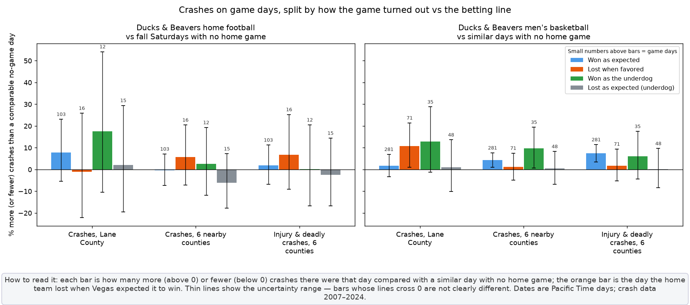
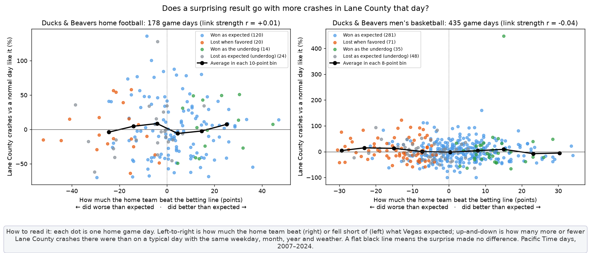
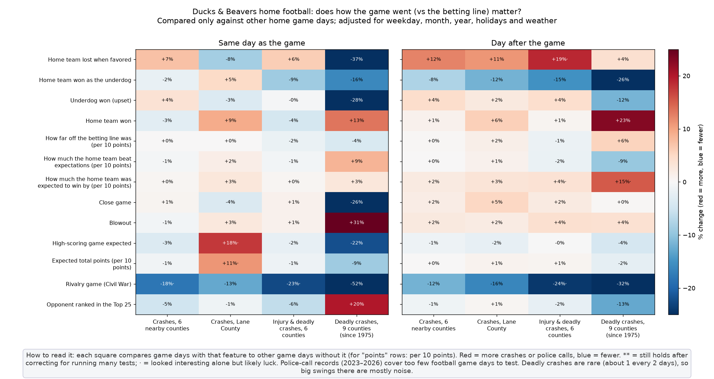

Updated Oct 28, 2026 8:17 AM PT. All dates are Pacific Time calendar days.



| Sport | Home games with a closing line | Dates | Underdog won | Home team lost when favored |
|---|---|---|---|---|
| Football | 246 | Aug 2007 – Oct 2026 | 51 | 31 |
| Men's basketball | 612 | Nov 2007 – Mar 2026 | 155 | 92 |
| Women's basketball | 106 | Dec 2020 – Mar 2026 | 22 | 14 |
Crash data (ODOT) covers 2007–2024, so newer games add to the betting table but not yet to the crash comparisons.
| Date | Home team | Opponent | Vegas line | Result |
|---|---|---|---|---|
| Aug 31, 2013 | Beavers | Eastern Washington | favored by 25.5 | lost 46–49 |
| Nov 13, 2010 | Beavers | Washington State | favored by 24 | lost 14–31 |
| Sep 3, 2011 | Beavers | Sacramento State | favored by 24 | lost 28–29 |
| Oct 2, 2014 | Ducks | Arizona | favored by 21.5 | lost 24–31 |
| Nov 8, 2025 | Beavers | Sam Houston | favored by 21.5 | lost 17–21 |
| Nov 17, 2012 | Ducks | Stanford | favored by 18.5 | lost 14–17 |
| Oct 10, 2015 | Ducks | Washington State | favored by 15.5 | lost 38–45 |
| Nov 19, 2011 | Ducks | USC | favored by 15.5 | lost 35–38 |
| Sep 24, 2016 | Ducks | Colorado | favored by 13 | lost 38–41 |
| Nov 12, 2022 | Ducks | Washington | favored by 12 | lost 34–37 |
Closing betting lines (spread, over/under, moneyline) come from the Sportsbook Reviews Online archive (football 2007–2022, men's basketball 2007–2021) and ESPN's odds feed (median across real sportsbooks) for later years and women's basketball; scores and Top-25 ranks from ESPN. Minor-league baseball and Hayward Field track meets are left out because there are no betting lines for them. Each comparison uses only home game days and adjusts for weekday, month, year, US holidays and weather (rain, temperatures, air pressure); football is also checked using fall Saturdays only. "Probably real" means a Benjamini–Hochberg corrected chance-of-fluke (q) under 0.05. Correlation is not causation. Data: all comparisons (CSV) · result types vs no-game days (CSV) · full text output · game-by-game lines (CSV).